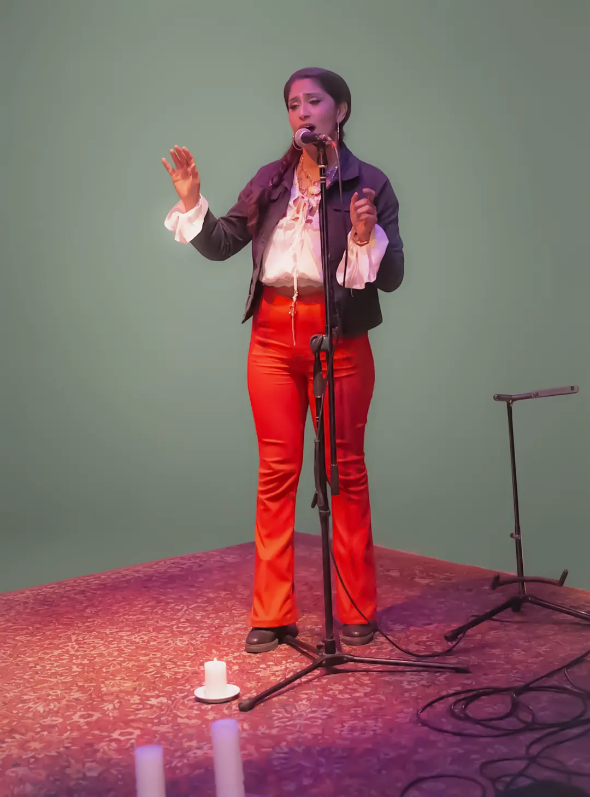
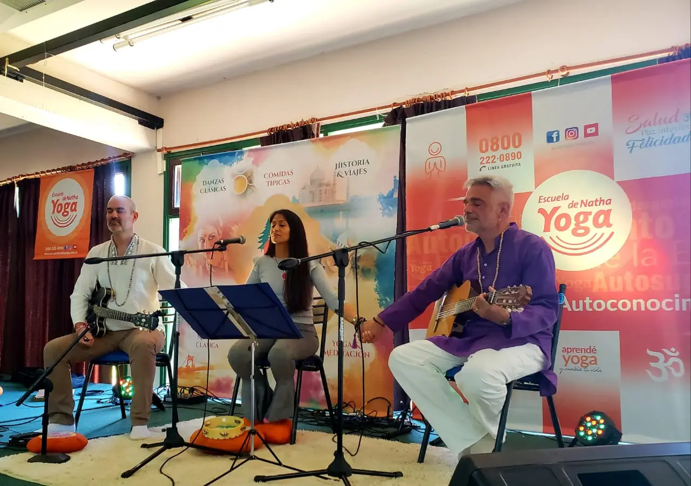
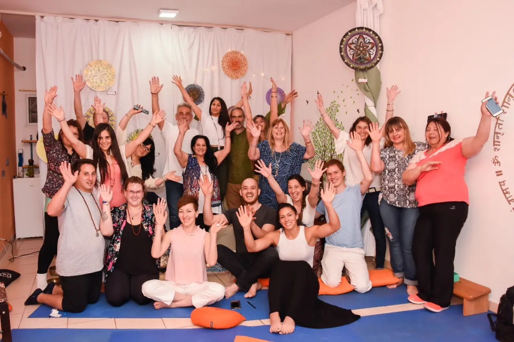
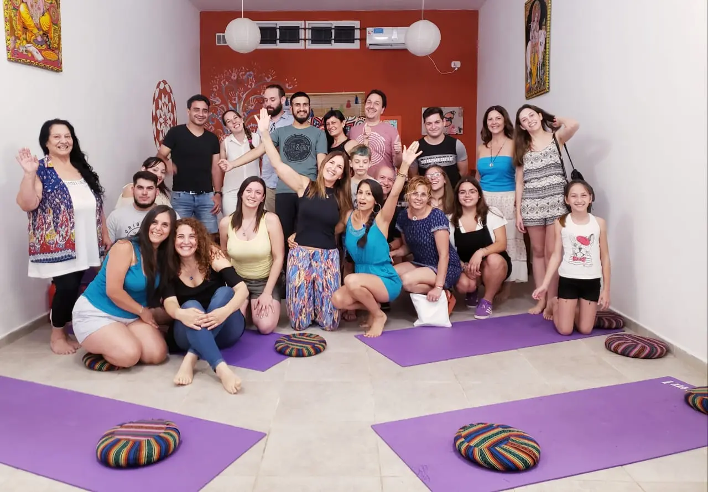

Despertá tu voz interior
Soy Prathayan, cantante profesional y profesora de canto. Mi enfoque es ayudarte a liberar tu voz hablada y cantando, mediante técnicas dónde trabajarás las emociones conscientes e inconscientes.

¿Quién soy? Mi historia con la voz
Mi camino con la voz comenzó desde muy jóven, aunque durante mucho tiempo los miedos y las exigencias me impidieron expresarla.
Fue en la adultez cuando decidí transformarlo, formándome en canto, comedia musical, foniatría y actualmente en fonoaudiología. Con el tiempo, el yoga, los mantras y la meditación ampliaron mi mirada, llevándome a comprender la voz como una expresión profunda que integra cuerpo, emoción y energía.
Hoy, con mi enfoque integral, ofrezco acompañamiento a cada persona para liberar su voz, tanto cantada como hablada.
Creo profundamente que todos tenemos una voz única esperando a ser descubierta ¡Y estoy acá para ayudarte a encontrarla!.
Espacios donde la voz encuentra su lugar




"Prathayan me ayudó mucho con las clases de canto y liberación de la voz. Gracias a ella logré desbloquear mi vishuda (chakra de la garganta) que estaba totalmente bloqueado. También pude expresarme a través de la voz, lo cual nunca me había pasado antes. Sumado a esto, cantar mantras es una meditación con la que descubrí el potencial de mi voz."
— Natalia C.
¿Te interesa contactarme?
Escribime y te respondo a la brevedad.